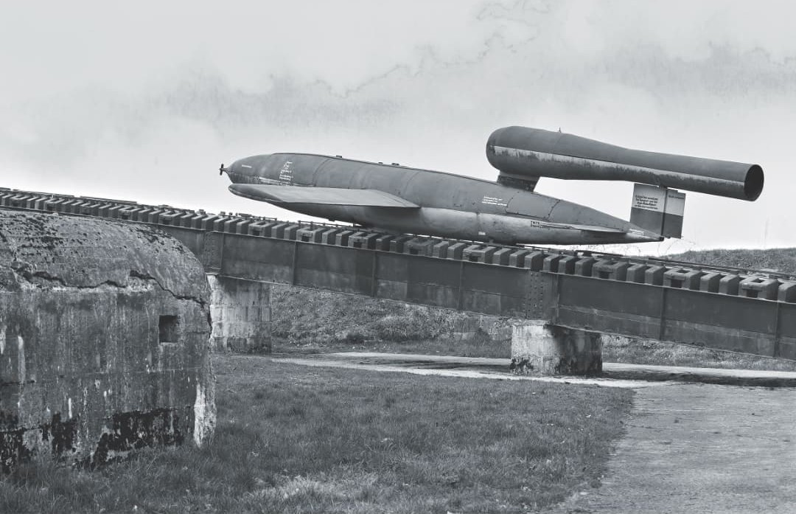
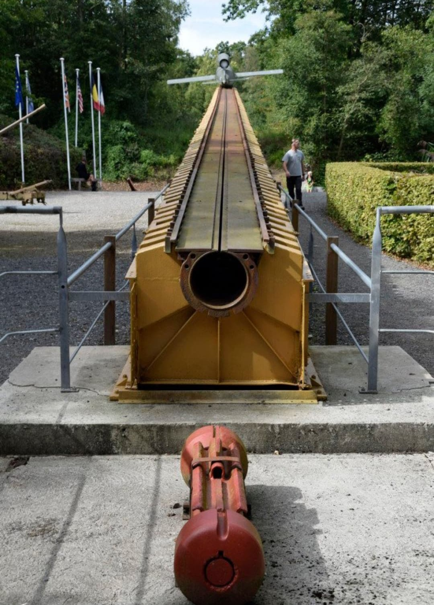

Le V1 (Vergeltungswaffe 1 – « arme de représailles n°1 ») est la première bombe volante de l’histoire. Utilisé par l’Allemagne nazie à partir de juin 1944, il vise principalement Londres, puis Anvers et Liège. Son moteur pulsé produit un bruit caractéristique, surnommé « la tondeuse volante » par les civils.
Le V1 est une arme de saturation : simple, peu coûteuse, produite en masse, et destinée à frapper les villes pour briser le moral des populations.
Nom : Fieseler Fi 103 / V1
Type : Bombe volante / missile de croisière primitif
Longueur : 8 mètres
Poids : 2 tonnes
Vitesse : 640 km/h
Portée : 250 km
Charge explosive : 850 kg d’amatol
Les V1 sont tirés depuis des rampes situées dans le Nord de la France :
Ces sites sont visés par les bombardements alliés dans le cadre de l’Opération Crossbow.

Le V1 frappe principalement Londres entre juin et septembre 1944. Plus de 6 000 civils sont tués. Les V1 visent ensuite Anvers et Liège, déjà touchées par les V2.
Le bruit du moteur pulsé est terrifiant : lorsque le son s’arrête, la bombe plonge vers le sol.
À partir de l’automne 1944, les Alliés détruisent les rampes de lancement et progressent en Europe. Le V1 devient moins efficace et est remplacé par le V2, plus rapide et impossible à intercepter.